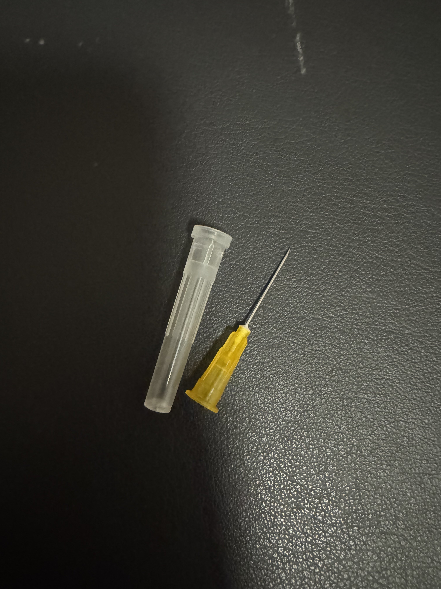

炽烈已极
@AnIncandescence
这个颜色大概是0.4，最初只是给仓鼠喂药的注射器被我留了下来
一旦被某些物品陪伴久了就会产生特殊的感情，就像和过去的自己对话一样。有时候也会想，这会不会是命中注定什么的呢

Pale Fire
@TauCeti_10700
一根贯穿了7年的针头，原来从那时候一切就开始了吗
从针尖都不敢完全没入皮肤，到熟练地穿刺血管，中间都经历过些什么呢。勾起了漫长的回忆 https://t.co/ONBWRQVOCu